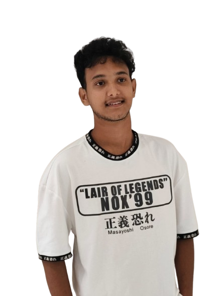

MY LIFE PHASES

0 - 5
- Family Bonding : I spent a lot of time with my family, and they played a huge role in shaping my early social experiences.
- Basic Learning : During this time, I attended preschool, where I started learning basic things like shapes, colors, and alphabets.
5 - 10
- Elementary School: I started formal education, where I learned foundational subjects like math, language, and science.
- Social Growth: This phase marked the beginning of forming friendships and learning to interact with classmates and peers.
10 - 15
- Entering Teenage Territory: I stepped into adolescence, a period filled with self-discovery and emotional growth.
- New Responsibilities: I started balancing schoolwork and life, gaining a sense of independence and responsibility.
15 - 20
- Bridging High School and College: High school graduation felt like the closing of one chapter, with college opening a whole new world of opportunities.
- Web Development Sparks: I found a love for coding and web development, which became a core part of my future career goals.